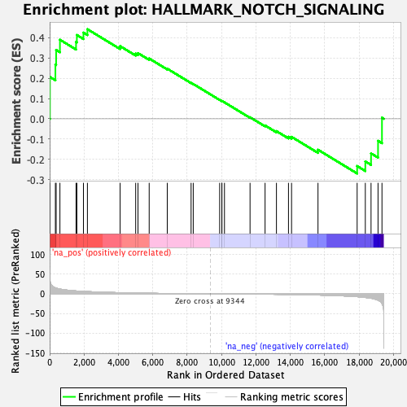
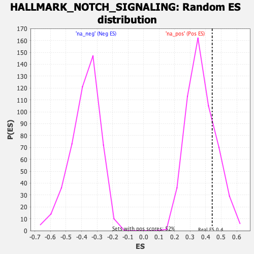

| | | Dataset | DE_genes |
| Phenotype | NoPhenotypeAvailable |
| Upregulated in class | na_pos |
| GeneSet | HALLMARK_NOTCH_SIGNALING |
| Enrichment Score (ES) | 0.44202465 |
| Normalized Enrichment Score (NES) | 1.1885701 |
| Nominal p-value | 0.21455939 |
| FDR q-value | 0.25903937 |
| FWER p-Value | 0.944 |
Table: GSEA Results Summary

Fig 1: Enrichment plot: HALLMARK_NOTCH_SIGNALING
Profile of the Running ES Score & Positions of GeneSet Members on the Rank Ordered List
| SYMBOL | RANK IN GENE LIST | RANK METRIC SCORE | RUNNING ES | CORE ENRICHMENT | | 1 | DLL1 | 14 | 40.662 | 0.2065 | Yes |
| 2 | NOTCH1 | 334 | 15.185 | 0.2675 | Yes |
| 3 | HES1 | 377 | 14.584 | 0.3396 | Yes |
| 4 | WNT5A | 598 | 12.117 | 0.3900 | Yes |
| 5 | LFNG | 1535 | 7.337 | 0.3792 | Yes |
| 6 | CUL1 | 1583 | 7.169 | 0.4133 | Yes |
| 7 | FZD5 | 1965 | 6.171 | 0.4251 | Yes |
| 8 | FZD1 | 2197 | 5.650 | 0.4420 | Yes |
| 9 | SAP30 | 4099 | 2.815 | 0.3584 | No |
| 10 | DTX4 | 5005 | 1.923 | 0.3216 | No |
| 11 | SKP1 | 5140 | 1.830 | 0.3240 | No |
| 12 | PPARD | 5790 | 1.355 | 0.2975 | No |
| 13 | RBX1 | 6842 | 0.764 | 0.2472 | No |
| 14 | FBXW11 | 8228 | 0.251 | 0.1771 | No |
| 15 | PSEN2 | 8353 | 0.213 | 0.1718 | No |
| 16 | FZD7 | 9890 | -0.100 | 0.0932 | No |
| 17 | CCND1 | 10017 | -0.129 | 0.0874 | No |
| 18 | KAT2A | 10021 | -0.130 | 0.0879 | No |
| 19 | JAG1 | 10170 | -0.169 | 0.0811 | No |
| 20 | DTX2 | 11658 | -0.586 | 0.0075 | No |
| 21 | PSENEN | 12532 | -0.907 | -0.0329 | No |
| 22 | APH1A | 13194 | -1.186 | -0.0609 | No |
| 23 | HEYL | 13894 | -1.601 | -0.0887 | No |
| 24 | DTX1 | 14073 | -1.721 | -0.0891 | No |
| 25 | NOTCH2 | 15611 | -3.075 | -0.1526 | No |
| 26 | NOTCH3 | 17888 | -7.232 | -0.2331 | No |
| 27 | ARRB1 | 18364 | -9.258 | -0.2104 | No |
| 28 | TCF7L2 | 18697 | -11.139 | -0.1707 | No |
| 29 | MAML2 | 19104 | -16.259 | -0.1087 | No |
| 30 | PRKCA | 19333 | -24.705 | 0.0054 | No |
Table: GSEA details [plain text format]

Fig 2: HALLMARK_NOTCH_SIGNALING: Random ES distribution
Gene set null distribution of ES for HALLMARK_NOTCH_SIGNALING